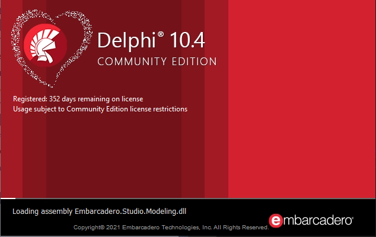

By: Braden Sutton
As a programmer in high school, I had the opportunity to work with two programming languages: Delphi and Python. Delphi is an object-oriented programming language primarily used for building Windows desktop applications, while Python is a high-level programming language that can be used for various applications such as machine learning, and data analysis.
My overall experience with his Delphi has been positive. It offers many features for building desktop applications. The language is easy to learn and the development environment is user-friendly. The only downside is that Delphi isn't as widely used as other programming languages, so finding resources and support can be difficult.
My experience with Python has been incredibly positive. Python has a huge ecosystem of libraries and frameworks that facilitate rapid application development. It's also a popular language with a large community, so finding resources and support is easy. The language is versatile and can be used for a variety of applications such as data analysis, web development, and machine learning.
In summary, both Delphi and Python have strengths and weaknesses. Delphi is a great language for building Windows desktop applications, while Python is a versatile language that can be used for many different applications. Ultimately, which one to choose depends on the specific needs of the project at hand.